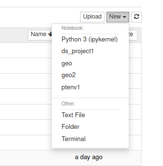

Virtual environments with Jupyter Notebooks
Virtual environments are a way of collecting all the packages you need for a given software project into one place, in such a way that they can be isolated from other software projects. For example, recently I have been experimenting with several different libraries for natural language processing and machine learning: Fast AI, PyTorch, spaCy. Installing all of them turns out to cause conflicts: one project may require one set of versions for the libraries and another requires a different set of versions.
Furthermore, I mostly rely on Jupyter Notebooks, as they allow you to quickly experiment, which is a requirement for data science work. Since I keep forgetting how to set up a virtual environment that is accessible from Jupyter Notebook, I thought it would be a good idea to record this here to quickly remind myself.
Create the environment and install the required packages
- Firstly make sure that conda is installed. The instructions are available here: conda installation
- Next, create a virtual environment form conda. Here we will just call is ds_project1 and use Python 3.8:
conda create -n ds_project1 python=3.8- Now we can activate this environment to install are required packages. Here we’re installing FastAI:
conda activate ds_project1
conda install -c fastchan fastaiThe string after -c indicates the repository where the package is located. This can be easily found through a Google search.
Allow Jupyter Notebook to use the environment
After all the required packages are added to the conda environment, we need to allow Jupyter to use it. Still in the virtual environment type:
conda install -c anaconda ipykernel
python -m ipykernel install --user --n=ds_project1Now each time you want to use this environment in Jupyter notebook, simply activate the environment and start jupyter notebook as you usually would:
conda activate ds_project1
jupyter notebookNow when you want to create a new notebook the environment should be available from the dropdown list:

Removing the environment
To remove the environment simply type:
conda remove env --name ds_project1And then to remove the option from Jupyter notebook:
jupyter kernelspec uninstall ds_project1